- 00 开篇词 打破四大认知局限，进阶高级性能工程师.md.html
- 01 性能工程：为什么很多性能测试人员无法对性能结果负责？.md.html
- 02 关键概念：性能指标和场景的确定.md.html
- 03 核心分析逻辑：所有的性能分析，靠这七步都能搞定.md.html
- 04 如何构建性能分析决策树和查找瓶颈证据链？.md.html
- 05 性能方案：你的方案是否还停留在形式上？.md.html
- 06 如何抽取出符合真实业务场景的业务模型？.md.html
- 07 性能场景的数据到底应该做成什么样子？.md.html
- 08 并发、在线和TPS到底是什么关系？.md.html
- 09 如何设计全局和定向监控策略？.md.html
- 10 设计基准场景需要注意哪些关键点？.md.html
- 11 打开首页之一：一个案例，带你搞懂基础硬件设施的性能问题.md.html
- 12 打开首页之二：如何平衡利用硬件资源？.md.html
- 13 用户登录：怎么判断线程中的Block原因？.md.html
- 14 用户信息查询：如何解决网络软中断瓶颈问题？.md.html
- 15 查询商品：资源不足有哪些性能表现？.md.html
- 16 商品加入购物车：SQL优化和压力工具中的参数分析.md.html
- 17 查询购物车：为什么铺底参数一定要符合真实业务特性？.md.html
- 18 购物车信息确定订单：为什么动态参数化逻辑非常重要？.md.html
- 19 生成订单信息之一：应用JDBC池优化和内存溢出分析.md.html
- 20 生成订单信息之二：业务逻辑复杂，怎么做性能优化？.md.html
- 21 支付前查询订单列表：如何分析优化一个固定的技术组件？.md.html
- 22 支付订单信息：如何高效解决for循环产生的内存溢出？.md.html
- 23 决定容量场景成败的关键因素有哪些？.md.html
- 24 容量场景之一：索引优化和Kubernetes资源分配不均衡怎么办？.md.html
- 25 容量场景之二：缓存对性能会有什么样的影响？.md.html
- 26 稳定性场景之一：怎样搞定业务积累量产生的瓶颈问题？.md.html
- 27 稳定性场景之二：怎样搞定磁盘不足产生的瓶颈问题？.md.html
- 28 如何确定异常场景的范围和设计逻辑？.md.html
- 29 异常场景：如何模拟不同组件层级的异常？.md.html
- 30 如何确定生产系统配置？.md.html
- 31 怎么写出有价值的性能报告？.md.html
- 我们这个课程的系统是怎么搭建起来的？.md.html
- 结束语 做真正的性能项目.md.html
- 捐赠
25 容量场景之二：缓存对性能会有什么样的影响？
你好，我是高楼。
上节课，我们经历了三个阶段的分析优化，分别解决了在压力线程不变的情况下，响应时间随时间增加而增加的问题，还有数据库加索引的问题，以及Kubernetes调度不均衡的问题。最后，TPS曲线看起来挺正常了，但是命运不会因为我努力了就会放过我。
为什么这么说呢？因为在上节课中，我们的场景只持续了十几分钟，对于容量场景来说，时间还是不够长。你知道，压力持续十几分钟，且TPS显示正常，并不能说明系统没有问题。
因此，我又对系统进行持续的压力测试，就是在这个过程中，又遇到了新的问题……
第四阶段分析
场景压力数据
这是我在进行持续加压过程中，得到的场景数据：
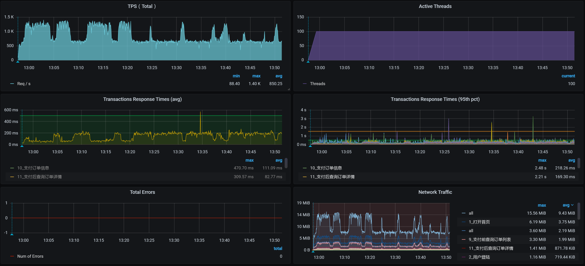
看上面的曲线图就能知道，这是在压力持续的过程中，出现了TPS掉下来的问题，这是不能接受的。
拆分响应时间
针对上述问题，我们先来看一下现在的时间消耗。这是已经运行了一段时间的响应时间图：
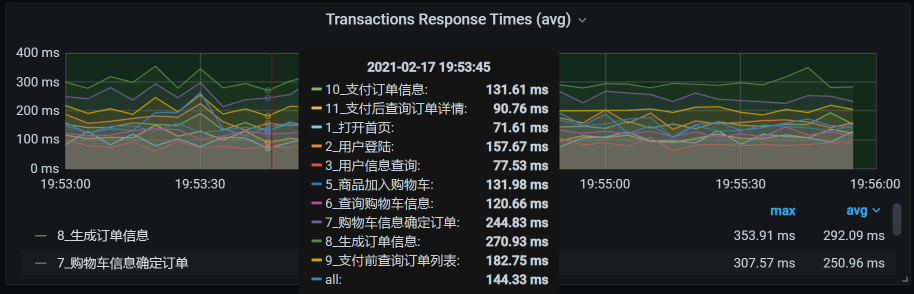
我们可以根据整体的平均响应时间，一个个分析这些接口的时间消耗在了哪里。其实，从这张图就能看出，所有的业务时间相比上一节课的响应时间图都增加了。由于所有业务的响应时间都增加了，说明不是某个业务本身的问题，所以，我们任意分析一个接口就可以。
这里我用生成确认订单这个接口做时间拆分。在之前部署系统的时候，我们把SkyWalking采样率设置得非常低，只有5%左右，目的为了不让APM影响性能和网络。
下面这些数据是按分钟平均的。
Gateway：- 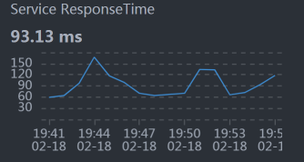
Order：- 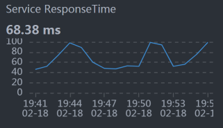
Cart：-

Member：- 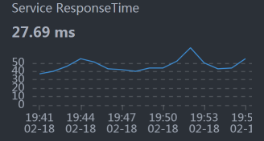
Auth：- 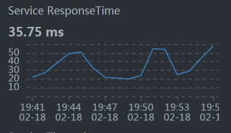
从数据上来看，似乎每个服务都和整体响应时间慢有关。悲催的场景总是这样。
不过，别慌张，我们仍然按照全局到定向的分析思路来走就可以了。我们先看全局监控数据。
全局监控分析
从全局监控的第一个界面来看，worker-4上的CPU资源使用比较高，其次是worker-6：
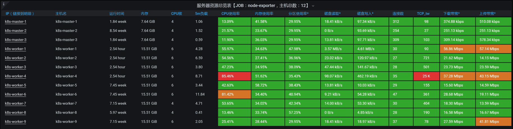
我们一个一个来收拾。
我们先进入到worker-4中，执行top/vmstat命令，截取到一些重要的数据，下面这些是worker-4这个节点更为详细的全局监控数据：
-- vmstat的数据
procs -----------memory---------- ---swap-- -----io---- -system-- ------cpu-----
r b swpd free buff cache si so bi bo in cs us sy id wa s
12 0 0 4484940 1100 4184984 0 0 0 0 45554 21961 58 25 14 0 3
9 0 0 4484460 1100 4185512 0 0 0 0 45505 20851 60 25 14 0 1
16 0 0 4483872 1100 4186016 0 0 0 0 44729 20750 62 24 12 0 2
15 0 0 4470944 1100 4186476 0 0 0 0 45309 25481 62 24 13 0 2
14 0 0 4431336 1100 4186972 0 0 0 0 48380 31344 60 25 14 0 1
16 0 0 4422728 1100 4187524 0 0 0 0 46735 27081 64 24 12 0 1
17 0 0 4412468 1100 4188004 0 0 0 0 45928 23809 60 25 13 0 2
22 0 0 4431204 1100 4188312 0 0 0 0 46013 24588 62 23 13 0 1
12 0 0 4411116 1100 4188784 0 0 0 0 49371 34817 59 24 15 0 2
16 1 0 4406048 1100 4189016 0 0 0 0 44410 21650 66 23 10 0 1
..................
--- top的数据
PID USER PR NI VIRT RES SHR S %CPU %MEM TIME+ COMMAND
935 root 20 0 6817896 1.3g 16388 S 301.7 8.7 71:26.27 java -Dapp.id=svc-mall-gateway -javaagent:/opt/skywalking/agent/skywalking-agent.jar -Dskywalking.agent.service_name=svc+
1009 101 20 0 13500 2980 632 R 37.6 0.0 10:13.51 nginx: worker process
1007 101 20 0 13236 2764 632 R 20.8 0.0 3:17.14 nginx: worker process
7690 root 20 0 3272448 3.0g 1796 S 14.2 19.1 2:58.31 redis-server 0.0.0.0:6379
6545 101 20 0 737896 48804 12640 S 13.9 0.3 12:36.09 /nginx-ingress -nginx-configmaps=nginx-ingress/nginx-config -default-server-tls-secret=nginx-ingress/default-server-secr+
1108 root 20 0 1423104 106236 29252 S 12.2 0.7 16:28.02 /usr/bin/dockerd -H fd:// --containerd=/run/containerd/containerd.sock
1008 101 20 0 13236 2760 628 S 6.9 0.0 0:46.30 nginx: worker process
6526 root 20 0 109096 8412 2856 S 6.3 0.1 7:30.98 containerd-shim -namespace moby -workdir /var/lib/containerd/io.containerd.runtime.v1.linux/moby/6eb72c56b028b0d5bd7f8df+
1082 root 20 0 3157420 116036 36328 S 5.3 0.7 11:15.65 /usr/bin/kubelet --bootstrap-kubeconfig=/etc/kubernetes/bootstrap-kubelet.conf --kubeconfig=/etc/kubernetes/kubelet.conf+
6319 nfsnobo+ 20 0 759868 53880 18896 S 3.0 0.3 3:18.33 grafana-server --homepath=/usr/share/grafana --config=/etc/grafana/grafana.ini --packaging=docker cfg:default.log.mode=c+
6806 root 20 0 1632160 47276 17108 S 2.6 0.3 5:09.43 calico-node -felix
6 root 20 0 0 0 0 S 1.0 0.0 0:14.19 [ksoftirqd/0]
..................
从vmstat的in列可以看出，系统的中断数比较高；从vmstat中的cs（context switch）来看，CS也达到了3万左右。同时，sy cpu（syscall消耗的CPU）也占到了25%左右。这就说明我们需要着重关注syscall（系统调用）层面。
定向监控分析
我们先查看中断数据，下面这张图就是全部的中断数据截图：
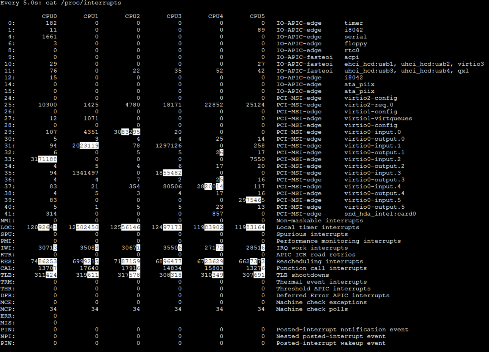
虽然从这张图里，我们可以看到整体的中断数据，也可以从白底黑字的数据上看到数据的变化，但是我们还没有结论。
我们再看软中断的数据：
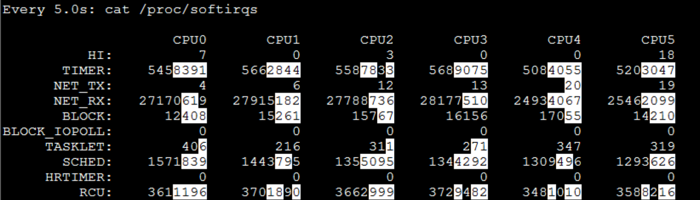
从白底黑字的数据可以看到，NET_RX的变化较大（TIMER是系统的时钟，我们不用做分析），而这个服务器worker-4上同时放了Gateway和Redis，并且这两个服务都是用网络的大户，显然这是我们要分析的地方。
由于网络的中断比较高，我们进入到Pod中，查看一下网络队列：
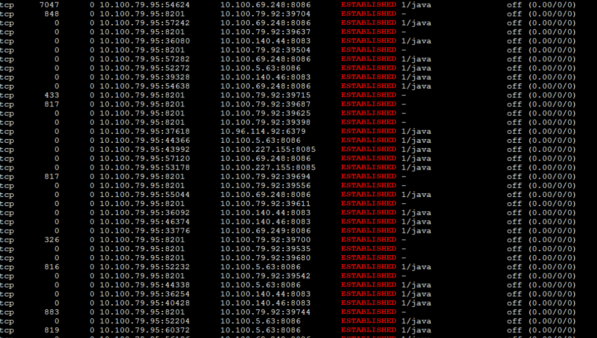
你看，这里面有recv_Q。我们知道，recv_Q是网络数据的接收队列，它持续有值说明了接收队列中确实有阻塞。
请你注意，这个结论不是我只刷一次netstat得到的，而是刷了很多次。因为每次都有这样的队列出现，所以，我才会判断网络接收队列recv_Q中确实有未处理完的数据。如果它只是偶尔出现一次，那问题倒是不大。
现在，我们继续分析这个问题，待会再给出解决方案。
既然接收队列中有值，从数据传递的逻辑来看，这应该是上层的应用没有及时处理。因此，我们来跟踪一下方法的执行时间。
在这里，我们先跟踪负责生成确认订单的generateConfirmOrder接口（其实这里要跟踪哪个方法倒是无所谓，因为前面说了所有业务都很慢）：
Command execution times exceed limit: 5, so command will exit. You can set it with -n option.
Condition express: 1==1 , result: true
`---ts=2021-02-18 19:20:15;thread_name=http-nio-8086-exec-113;id=3528;is_daemon=true;priority=5;TCCL=org.springframework.boot.web.embedded.tomcat.TomcatEmbeddedWebappClassLoader@20a46227
`---[151.845221ms] com.dunshan.mall.order.service.impl.PortalOrderServiceImpl$$EnhancerBySpringCGLIB$$11e4c326:generateConfirmOrder(
`---[151.772564ms] org.springframework.cglib.proxy.MethodInterceptor:intercept() #5
`---[151.728833ms] com.dunshan.mall.order.service.impl.PortalOrderServiceImpl:generateConfirmOrder(
+---[0.015801ms] com.dunshan.mall.order.domain.ConfirmOrderResult:<init>() #8
+---[75.263121ms] com.dunshan.mall.order.feign.MemberService:getCurrentMember() #8
+---[0.006396ms] com.dunshan.mall.model.UmsMember:getId() #9
+---[0.004322ms] com.dunshan.mall.model.UmsMember:getId() #9
+---[0.008234ms] java.util.List:toArray() #5
+---[min=0.006794ms,max=0.012615ms,total=0.019409ms,count=2] org.slf4j.Logger:info() #5
+---[0.005043ms] com.dunshan.mall.model.UmsMember:getId() #9
+---[28.805315ms] com.dunshan.mall.order.feign.CartItemService:listPromotionnew() #5
+---[0.007123ms] com.dunshan.mall.order.domain.ConfirmOrderResult:setCartPromotionItemList() #9
+---[0.012758ms] com.dunshan.mall.model.UmsMember:getList() #10
+---[0.011984ms] com.dunshan.mall.order.domain.ConfirmOrderResult:setMemberReceiveAddressList() #5
+---[0.03736ms] com.alibaba.fastjson.JSON:toJSON() #11
+---[0.010188ms] com.dunshan.mall.order.domain.OmsCartItemVo:<init>() #12
+---[0.005661ms] com.dunshan.mall.order.domain.OmsCartItemVo:setCartItemList() #12
+---[19.225703ms] com.dunshan.mall.order.feign.MemberService:listCart() #12
+---[0.010474ms] com.dunshan.mall.order.domain.ConfirmOrderResult:setCouponHistoryDetailList() #5
+---[0.007807ms] com.dunshan.mall.model.UmsMember:getIntegration() #13
+---[0.009189ms] com.dunshan.mall.order.domain.ConfirmOrderResult:setMemberIntegration() #5
+---[27.471129ms] com.dunshan.mall.mapper.UmsIntegrationConsumeSettingMapper:selectByPrimaryKey() #13
+---[0.019764ms] com.dunshan.mall.order.domain.ConfirmOrderResult:setIntegrationConsumeSetting() #13
+---[0.154893ms] com.dunshan.mall.order.service.impl.PortalOrderServiceImpl:calcCartAmount() #13
`---[0.013139ms] com.dunshan.mall.order.domain.ConfirmOrderResult:setCalcAmount() #13
你看，这个接口中有一个getCurrentMember方法，它是Member上的一个服务，是用来获取当前用户信息的，而其他服务都会用到这个服务，因为需要Token嘛。
从上面的栈信息看，getCurrentMember用了75ms多，这个时间明显是慢了，我们跟踪一下这个方法，看看是哪里慢了：
Condition express: 1==1 , result: true
`---ts=2021-02-18 19:43:18;thread_name=http-nio-8083-exec-25;id=34bd;is_daemon=true;priority=5;TCCL=org.springframework.boot.web.embedded.tomcat.TomcatEmbeddedWebappClassLoader@6cb759d5
`---[36.139809ms] com.dunshan.mall.member.service.imp.MemberServiceImpl:getCurrentMember(
+---[0.093398ms] javax.servlet.http.HttpServletRequest:getHeader() #18
+---[0.020236ms] cn.hutool.core.util.StrUtil:isEmpty() #18
+---[0.147621ms] cn.hutool.json.JSONUtil:toBean() #19
+---[0.02041ms] com.dunshan.mall.common.domain.UserDto:getId() #19
`---[35.686266ms] com.dunshan.mall.member.service.MemberCacheService:getMember() #5
这种需要瞬间抓的数据，要反复抓很多遍才能确定。虽然我在这里只展示了一条，但是，我抓的时候可是抓了好多次才得到的。从上面的数据来看，getCurrentMember中使用的getMember方法耗时比较长，达到了35ms多。
我们看一下getMember的具体实现：
@Override
public UmsMember getMember(Long memberId) {
String key = REDIS_DATABASE + ":" + REDIS_KEY_MEMBER + ":" + memberId;
return (UmsMember) redisService.get(key);
这个代码的逻辑很简单：拼接Key信息，然后从Redis里找到相应的Member信息。
既然getMember函数是从Redis里获取数据，那我们就到Redis里检查一下slowlog：
127.0.0.1:6379> slowlog get
1) 1) (integer) 5
1) (integer) 1613647620
2) (integer) 30577
3) 1) "GET"
1) "mall:ums:member:2070064"
4) "10.100.140.46:53152"
5) ""
2) 1) (integer) 4
1) (integer) 1613647541
2) (integer) 32878
3) 1) "GET"
1) "mall:ums:member:955622"
4) "10.100.140.46:53152"
5) ""
........................
你看，确实是get命令慢了，看时间都超过了10ms（slowlog默认设置是10ms以上才记录）。如果这个命令执行的次数不多，倒也没啥。关键是这个命令是验证用户的时候用的，这样的时间是没办法容忍的。
为什么这么说呢？
因为在业务上来看，除了打开首页和查询商品不用它之外，其他的脚本似乎都需要用它。所以，它慢了不是影响一个业务，而是影响一堆业务。
然而，正当我们分析到这里，还没来得及做优化的时候，又……出现了新问题。我在接着压的过程中，发现了这样的现象：
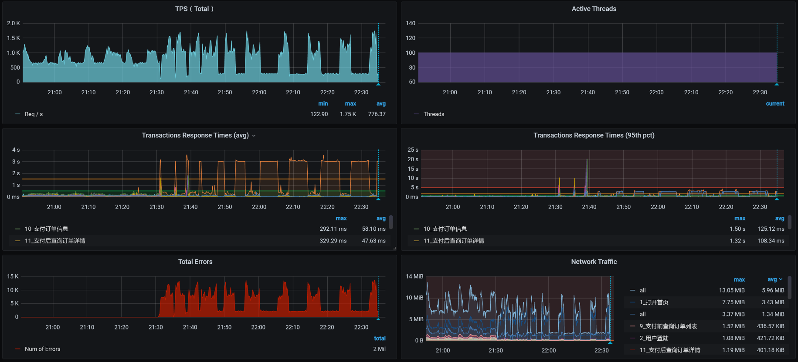
你瞧瞧，TPS不稳定就算了，后面居然还全报错了，这也太不合适了吧！
于是，我开始对报错日志一通查，最后发现了Redis的容器都飘红了，下面是Redis在架构中的状态截图：
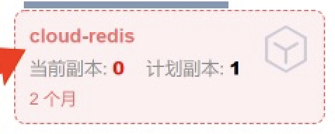
这明显是Redis没了呀！这时候我们再去看应用的状态：
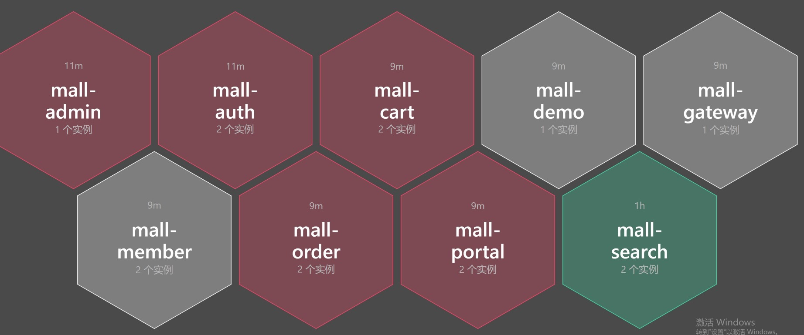
满目疮痍呀！
接着，我们登录到Redis服务所在的worker节点，查看日志：
[ 7490.807349] redis-server invoked oom-killer: gfp_mask=0xd0, order=0, oom_score_adj=807
[ 7490.821216] redis-server cpuset=docker-18cc9a81d8a58856ecf5fed45d7db431885b33236e5ad50919297cec453cebe1.scope mems_allowed=0
[ 7490.826286] CPU: 2 PID: 27225 Comm: redis-server Kdump: loaded Tainted: G ------------ T 3.10.0-1127.el7.x86_64 #1
[ 7490.832929] Hardware name: Red Hat KVM, BIOS 0.5.1 01/01/2011
[ 7490.836240] Call Trace:
[ 7490.838006] [<ffffffff9af7ff85>] dump_stack+0x19/0x1b
[ 7490.841975] [<ffffffff9af7a8a3>] dump_header+0x90/0x229
[ 7490.844690] [<ffffffff9aa9c4a8>] ? ep_poll_callback+0xf8/0x220
[ 7490.847625] [<ffffffff9a9c246e>] oom_kill_process+0x25e/0x3f0
[ 7490.850515] [<ffffffff9a933a41>] ? cpuset_mems_allowed_intersects+0x21/0x30
[ 7490.853893] [<ffffffff9aa40ba6>] mem_cgroup_oom_synchronize+0x546/0x570
[ 7490.857075] [<ffffffff9aa40020>] ? mem_cgroup_charge_common+0xc0/0xc0
[ 7490.860348] [<ffffffff9a9c2d14>] pagefault_out_of_memory+0x14/0x90
[ 7490.863651] [<ffffffff9af78db3>] mm_fault_error+0x6a/0x157
[ 7490.865928] [<ffffffff9af8d8d1>] __do_page_fault+0x491/0x500
[ 7490.868661] [<ffffffff9af8da26>] trace_do_page_fault+0x56/0x150
[ 7490.871811] [<ffffffff9af8cfa2>] do_async_page_fault+0x22/0xf0
[ 7490.874423] [<ffffffff9af897a8>] async_page_fault+0x28/0x30
[ 7490.877127] Task in /kubepods.slice/kubepods-burstable.slice/kubepods-burstable-pod6e897c3a_8b9f_479b_9f53_33d2898977b0.slice/docker-18cc9a81d8a58856ecf5fed45d7db431885b33236e5ad50919297cec453cebe1.scope killed as a result of limit of /kubepods.slice/kubepods-burstable.slice/kubepods-burstable-pod6e897c3a_8b9f_479b_9f53_33d2898977b0.slice/docker-18cc9a81d8a58856ecf5fed45d7db431885b33236e5ad50919297cec453cebe1.scope
[ 7490.893825] memory: usage 3145728kB, limit 3145728kB, failcnt 176035
[ 7490.896099] memory+swap: usage 3145728kB, limit 3145728kB, failcnt 0
[ 7490.899137] kmem: usage 0kB, limit 9007199254740988kB, failcnt 0
[ 7490.902012] Memory cgroup stats for /kubepods.slice/kubepods-burstable.slice/kubepods-burstable-pod6e897c3a_8b9f_479b_9f53_33d2898977b0.slice/docker-18cc9a81d8a58856ecf5fed45d7db431885b33236e5ad50919297cec453cebe1.scope: cache:72KB rss:3145656KB rss_huge:0KB mapped_file:0KB swap:0KB inactive_anon:0KB active_anon:3145652KB inactive_file:0KB active_file:20KB unevictable:0KB
[ 7490.962494] [ pid ] uid tgid total_vm rss nr_ptes swapents oom_score_adj name
[ 7490.966577] [27197] 0 27197 596 166 5 0 807 sh
[ 7490.970286] [27225] 0 27225 818112 786623 1550 0 807 redis-server
[ 7490.974006] [28322] 0 28322 999 304 6 0 807 bash
[ 7490.978178] Memory cgroup out of memory: Kill process 27242 (redis-server) score 1808 or sacrifice child
[ 7490.983765] Killed process 27225 (redis-server), UID 0, total-vm:3272448kB, anon-rss:3144732kB, file-rss:1760kB, shmem-rss:0kB
原来是worker节点的内存不够用了，而Redis在计算OOM评分时也达到了1808分。于是，操作系统就义无反顾地把Redis给杀了。
我们再次把Redis启动之后，观察它的内存消耗，结果如下：
[root@k8s-worker-4 ~]# pidstat -r -p 5356 1
Linux 3.10.0-1127.el7.x86_64 (k8s-worker-4) 2021年02月18日 _x86_64_ (6 CPU)
19时55分52秒 UID PID minflt/s majflt/s VSZ RSS %MEM Command
19时55分53秒 0 5356 32.00 0.00 3272448 1122152 6.90 redis-server
19时55分54秒 0 5356 27.00 0.00 3272448 1122416 6.90 redis-server
19时55分55秒 0 5356 28.00 0.00 3272448 1122416 6.90 redis-server
19时55分56秒 0 5356 28.00 0.00 3272448 1122680 6.90 redis-server
19时55分57秒 0 5356 21.78 0.00 3272448 1122680 6.90 redis-server
19时55分58秒 0 5356 38.00 0.00 3272448 1122880 6.90 redis-server
19时55分59秒 0 5356 21.00 0.00 3272448 1122880 6.90 redis-server
19时56分00秒 0 5356 25.00 0.00 3272448 1122880 6.90 redis-server
我只是截取了Redis没死之前的一小段数据，然后通过RSS（实际使用内存）来不断观察这段数据，发现内存确实会一直往上涨。我又查了一下Redis的配置文件，发现没配置maxmemory。
没配置倒是没什么，内存不够就不够了呗，Pod不是还有内存限制吗？但可惜的是，worker上的内存不够了，导致了Redis进程被操作系统杀掉了，这就解释了TPS图中后半段会报错的问题。
但是响应时间慢，我们还是得接着分析。我们在前面看到软中断和带宽有关，为了减少服务中断之间的相互影响，待会我把Redis和Gateway两个服务分开。
我们都知道，Redis是靠内存来维护数据的，如果只做内存的操作，它倒是会很快。但是Redis还有一块跟内存比较有关的功能，就是持久化。我们现在采用的是AOF持久化策略，并且没有限制AOF的文件大小。
这个持久化文件是放到NFS文件服务器上面的，既然是放到文件服务器上，那就需要有足够的磁盘IO能力才可以。因此，我们到nfs服务器上查看一下IO的能力，截取部分数据如下：
Device: rrqm/s wrqm/s r/s w/s rkB/s wkB/s avgrq-sz avgqu-sz await r_await w_await svctm %util
sda 0.00 0.00 65.00 0.00 6516.00 0.00 200.49 1.85 28.43 28.43 0.00 3.95 25.70
Device: rrqm/s wrqm/s r/s w/s rkB/s wkB/s avgrq-sz avgqu-sz await r_await w_await svctm %util
sda 0.00 0.00 24.00 0.00 384.00 0.00 32.00 0.15 6.46 6.46 0.00 6.46 15.50
Device: rrqm/s wrqm/s r/s w/s rkB/s wkB/s avgrq-sz avgqu-sz await r_await w_await svctm %util
sda 0.00 0.00 8.00 0.00 1124.00 0.00 281.00 0.07 8.38 8.38 0.00 4.00 3.20
..........................
Device: rrqm/s wrqm/s r/s w/s rkB/s wkB/s avgrq-sz avgqu-sz await r_await w_await svctm %util
sda 0.00 0.00 11.00 0.00 556.00 0.00 101.09 0.15 13.55 13.55 0.00 10.36 11.40
Device: rrqm/s wrqm/s r/s w/s rkB/s wkB/s avgrq-sz avgqu-sz await r_await w_await svctm %util
sda 0.00 0.00 4.00 0.00 32.00 0.00 16.00 0.08 19.25 19.25 0.00 15.25
通过svctm（IO响应时间计数器）这个参数可以看到，IO的响应时间也增加了。虽然在sysstat的新版本中已经不建议使用svctm了，但是在我们当前使用的版本中，仍然有这个参数。并且通过它，我们可以看到IO的响应时间确实在增加。
为了证明IO的响应时间是和AOF有关，我们先把AOF关掉，设置appendonly no看看效果。如果有效果，那优化方向就非常明确了，我们要做的就是这几个优化动作：
把Redis先移到一个网络需求没那么大的Worker上去，观察一下TPS能不能好一点。如果这一步有效果，我们就不用再折腾下一步了；
如果上一步做完之后没有效果，就再把AOF关掉，再观察TPS。如果AOF关掉后有效果，那我们就得分析下这个应用有没有必要做Redis的持久化了。如果有必要，就得换个快一点的硬盘；
不管上面两步有用没用，对Redis来说，我们都应该考虑限制内存的大小和AOF文件的大小。
我们看一下把Redis从worker-4移到worker-7上之后的TPS如下：
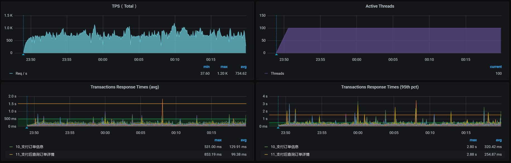
TPS还是在下降，并且没有一开始的那么高了，之前都能达到1000TPS。这个看似非常正确的优化动作却导致了TPS下降的现象，显然不是我们期望的。
现在还不知道问题在哪里，不过，我们一直想达到的目标是降队列。所以，我们先确认下网络队列有没有降下来，再来考虑TPS怎么提升。
你看worker-4上的队列，没有recv_Q的值了：
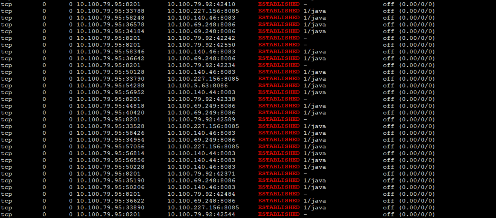
现在我们就得来处理下AOF了，因为我们虽然移开了Redis，但是TPS并没有上升。所以，我们还得看看AOF的影响。
关掉AOF之后，TPS如下：
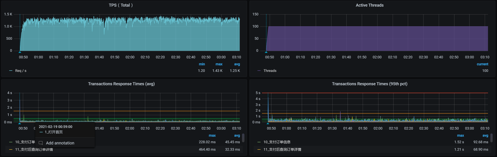
总体资源如下：
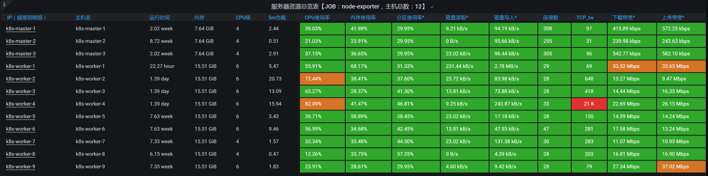
看到了没，效果还是有的吧？我们可是得到了1000以上的稳定的TPS曲线。
在这个容量场景中，我们完成了四个阶段的分析之后，优化效果还不错。不过，每个性能测试都应该有结论。所以，我们还需要做一个动作，就是接着增加压力，看一下系统的最大容量能达到多少。
于是，我们进入第五个阶段的分析。
第五阶段分析
请你注意，容量场景最重要的变化只有一个，就是增加线程。而跟着线程一起变化的就是参数化的数据量。在这样的增加线程的场景中，我们还要关注的就是资源的均衡使用。因此，在第四阶段的优化之后，我们先来看一下这个场景的结果是个什么样子。
场景运行数据
场景压力数据如下：
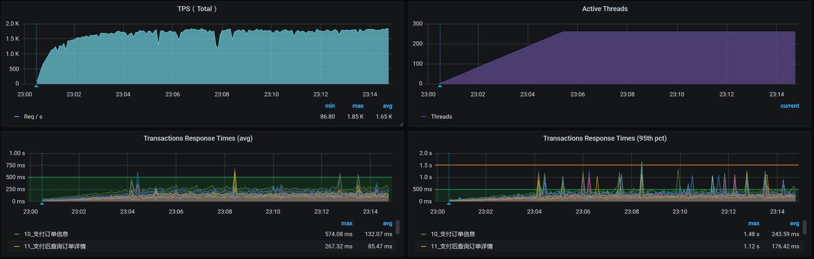
从效果上来看，不错哦，TPS已经达到1700了。
全局监控分析
全局监控的数据如下：
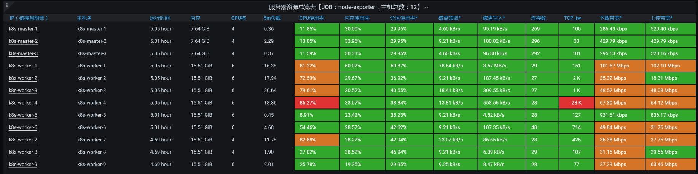
从上面两张图中可以看到，在我们这样的压力之下，TPS最大能达到1700左右，系统整体资源使用率也不算少了。
经过了基准场景和容量场景之后，我们现在就可以下结论了：系统资源在这个最大容量的场景中已经达到了比较高的使用率。
你有没有听过性能行业中一直流传的一句话：性能优化是无止境的。所以，我们一定要选择好性能项目结束的关键点。
就拿我们这个课程的案例来说，这个系统在技术上已经没有优化的空间了，或者说在技术上优化的成本比较高（比如说要做一些定制的开发和改造）。如果你在这种情况下还想要扩大容量，那么你能做的就是增加节点和硬件资源，把所有的硬件资源全都用完。
但是！请所有做性能项目的人注意！我们做性能项目，不是说把系统优化到最好后，就可以在生产环境中按这样的容量来设计整体的生产资源****了！要知道，生产环境中出现问题的代价是非常高的，一般我们都会增加一定的冗余，但是冗余多少就不一而足了。
在很多企业中，生产环境里使用的CPU都没有超过20%。为什么会有这么多的冗余呢？在我的经验中，大部分的项目都是根据业务的发展在不断迭代，然后形成了这样的局面。你可以想像一下，这样的生产环境里有多少资源浪费。
说到这里，我们不得不说一下怎么评估架构级的容量。因为对于一个固定客户端数的系统来说，很容易判断整体的容量。但是，对非固定客户端数的系统而言，要想抵挡得住突发的业务容量。那就要经过严格的设计了，像缓存、队列、限流、熔断、预热等等这些手段都要上了。
对于整体的架构容量设计，在所有的企业中都不是一蹴而就的，都要经过多次的、多年的版本迭代，跟着业务的发展不断演进得到。这就不是一个专栏可以尽述的了。
总结
从基准场景做完之后，我们来到了容量场景，这是一个非常大的变化。在这个场景中，我们解决了几个问题并最终给出了结论：
第一个阶段：分析了压力工具参数化的问题，解决了TPS不断降低、响应时间不断上升的问题。
第二个阶段：分析了数据库索引，解决了TPS低的问题。
第三个阶段：分析了资源争用，解决了多容器跑到一个节点上的问题。
第四个阶段：分析了网络争用和Redis的AOF，解决了TPS不稳定的问题。
第五个阶段：递增压力，给出最终系统整体容量的结论。
在做完这些动作之后，我们终于可以给出比较明确的结论了：TPS能达到1700！
请你记住，对于一个性能项目来说，没有结论就是在耍流氓。所以，我一直强调，在性能项目中，我们一定要给出最大容量的结论。
课后作业
这就是今天的全部内容，最后给你留两个思考题吧：
- 为什么性能项目一定要有结论？
- 当多个性能问题同时出现时，我们怎么判断它们产生的相互影响？
- 如何判断一个系统已经优化到了最优的状态？
记得在留言区和我讨论、交流你的想法，每一次思考都会让你更进一步。
如果这节课让你有所收获，也欢迎你分享给你的朋友，共同学习进步。我们下一讲再见！
© 2019 - 2023 Liangliang Lee. Powered by gin and hexo-theme-book.